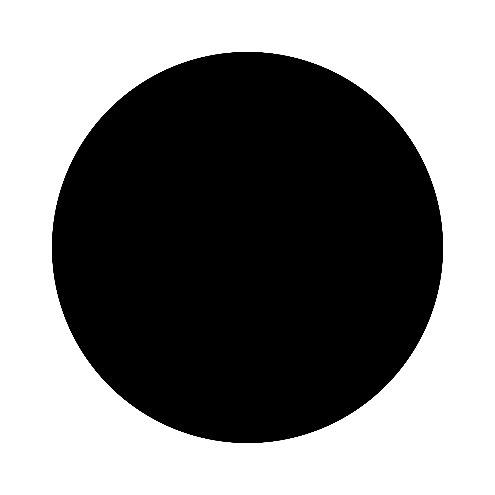

<!DOCTYPE html>
<html>
  <head>
    <title>Probe Experiment</title>
    <script src="https://unpkg.com/jspsych@7.3.3"></script>
    <script src="https://unpkg.com/@jspsych/plugin-html-keyboard-response@1.0.0"></script>
    <script src="https://unpkg.com/@jspsych/plugin-image-keyboard-response@1.0.0"></script>
    <script src="https://unpkg.com/@jspsych/plugin-video-keyboard-response@1.1.3"></script>
    <script src="https://unpkg.com/@jspsych/plugin-preload@1.0.0"></script>
    <script src="https://unpkg.com/@jspsych/plugin-survey-multi-choice@1.0.0"></script>
    <script src="https://unpkg.com/@jspsych/plugin-survey-html-form@1.0.0"></script>
    <script src="https://unpkg.com/@jspsych/plugin-html-button-response@1.0.0"></script>
    <link href="https://unpkg.com/jspsych@7.3.3/css/jspsych.css" rel="stylesheet" type="text/css" />
  </head>
  <body></body>
  <script>

// Initialize jsPsych
    var jsPsych = initJsPsych({
      on_finish: function() {
        jsPsych.data.displayData();
      }
    });
    
// Create timeline
    var timeline = [];
    // Scroll to the very bottom to see the main timeline.
    
// Define stimuli
    var probe_image = "circle.png";
    
    var videos = [ // This is where I can add more stimuli videos if needed. The real task would include at least 20 different actors (40 videos).
      "stim/1_L.mp4","stim/1_R.mp4",
      "stim/2_L.mp4","stim/2_R.mp4",
      "stim/3_L.mp4","stim/3_R.mp4"
      ];
      // The number at the start of the filename indicates the actor.
      // "R" and "L" indicate right and left, respectively.
      // "R" means the emergent threat stimulus (a face transitioning from an angry to neutral expression) 
      // appears on the right side. "L" means it appears on the left side.
      // For example, "1_L.mp4" is actor 1 with the angry-to-neutral transition 
      // on the left side.
      // These directions will later be used to determine congruency.

// Preload image and videos
    var preload = {
    type: jsPsychPreload,
    video: videos,
    images: [probe_image]
    };

// Define consent form
    var consent = {
    type: jsPsychSurveyMultiChoice,
    preamble: `
    <div style="max-width: 700px; margin: auto; text-align: left;">
      <div class="section">
      <h3>Purpose of the Study</h3>
      <p>
        This study aims to better understand the differences in attentional bias by using <strong>dynamic (moving) facial expressions</strong>
        that change between neutral and angry emotions. Attentional bias refers to the tendency to be drawn to certain stimuli. The dynamic expressions in this study may better reflect how people perceive
        emotions in real life. The measured attentional bias will later be analyzed with social anxiety levels.
      </p>
      </div>
      
      <div class="section">
      <h3>What You Will Be Asked to Do</h3>
      <p>If you agree to participate, you will complete a computer-based task known as a <strong>dot-probe task</strong>.</p>
      <ul>
        <li>A fixation cross will appear at the centre of your screen for a brief moment.</li>
        <li>You will view pairs of faces that change between neutral and angry expressions.</li>
        <li>A small probe (dot) will appear after the faces.</li>
        <li>You will respond to the location of the dot using your keyboard.</li>
        <li>You will be asked to disclose any personal mental health conditions at your discretion.</li>
        <li>You will complete a brief questionnaire about social experiences.</li>
      </ul>
      <p>Your participation will take approximately <strong>20–30 minutes</strong>.</p>
      </div>
      
      <div class="section">
      <h3>Eligibility</h3>
      <ul>
        <li>18 years of age or older</li>
        <li>Normal or corrected-to-normal vision</li>
        <li>Able to use a keyboard</li>
      </ul>
      </div>
      
      <div class="section">
      <h3>Potential Risks and Discomforts</h3>
      <p>This study involves minimal risk. However:</p>
      <ul>
        <li>You may view facial expressions (e.g., angry faces) that may feel mildly uncomfortable.</li>
        <li>You may experience some fatigue for the duration of the experiment. There will be an optional break when you are halfway through the experiment to help reduce fatigue.</li>
        <li>You may reflect on social experiences that could cause minor emotional discomfort.</li>
      </ul>
      <p>You may skip questions or withdraw at any time without penalty.</p>
      </div>

      <div class="section">
      <h3>Benefits</h3>
      <p>
        There are no direct benefits to completing this study. However, your participation will contribute to research on attention
        and social anxiety. You will receive SONA course credit for your participation if you are registered in the McMaster University SONA system.
      </p>
      </div>
      
      <div class="section">
      <h3>Confidentiality</h3>
      <ul>
        <li>Your data will be anonymized and stored securely.</li>
        <li>No identifying information will be included in reports.</li>
        <li>Only the research team will have access to the data.</li>
      </ul>
      </div>

      <div class="section">
      <h3>Voluntary Participation</h3>
      <p>
        Your participation is voluntary. You may withdraw at any time without penalty or loss of benefits.
      </p>
      </div>
      `,
      
    questions: [
    {
      prompt: "By consenting, you confirm that you understand the study and agree to participate.",
      name: 'consent',
      options: ['I consent', "I do not consent"], 
      required: true
      }
     ],

  on_finish: function(data){
    const response = data.response.consent;
    if(response === "I do not consent"){
      
      jsPsych.endExperiment(`
        <p>You have chosen not to participate.</p>
        <p>The experiment has now ended.</p>
        <p>Thank you for your time.</p>
        <p>If there has been an error, please contact us at zhoum95@mcmaster.ca.</p>
      `);
    }
  }
};
  

// Functions
  // These functions will be used to determine congruency and randomness of emotional transitions.
  // Using the file naming format, we can systematically sort where the emotional facial expression transitions of interest appear (right or left).
  function getVideoSide(file){ // This function examines the file name, check if it contains "_L" and returns "left" (same for "_R" and "right") using .includes()
  if(file.includes("_L")){ 
    return "left";
    }
  if(file.includes("_R")){
    return "right";
    }
  }
  
  function randomProbeSide(){
    return Math.random() < 0.5 ? "left" : "right"; // Math.random() gives a random number between 0 and 1. Half the time, the number is < 0.5 ("left"). The other half of the time the number is >= 0.5 ("right").
    // This function gives me random probe placement.
   }
  function getCondition(videoSide, probeSide){ // This is the function that will determine congruency. It compares the location of the neutral-to-angry face (videoSide) with where the probe appears (probeSide).
  // If the probe appears on the same side as the neutral-to-angry facial expression (videoSide === probeSide), the condition is congruent. Otherwise, the condition is incongruent.
    if(videoSide === probeSide){
      return "congruent";
    } else {
      return "incongruent";
    }
  }

// Define trial variables
// Now that we have our functions, we can define our variables.
var timeline_variables = [];
  videos.forEach(video => { // /forEach() is a loop that goes through each item in the array. video => indicates that for each video in the "videos" array, the code inside {} runs. 
    var video_side = getVideoSide(video); // This is the function we made earlier, which labels the video as "left" or "right" depending on the file name.

  // Congruent trial definition
  timeline_variables.push({
    video: video,
    video_side: video_side,
    probe_side: video_side,
    condition: "congruent"
  });

  // Incongruent trial definition
  timeline_variables.push({
    video: video,
    video_side: video_side,
    probe_side: video_side === "left" ? "right" : "left",
    condition: "incongruent"
  });
});

// Define fixation trial
  // A fixation cross will be shown to the participant for a varying amount of time. 
  var fixation = {
    type: jsPsychHtmlKeyboardResponse,
    stimulus: "<div style='font-size:60px'>+</div>",
    choices: "NO_KEYS",
    trial_duration: function(){
    return jsPsych.randomization.sampleWithoutReplacement([250, 500, 750, 1000, 1250, 1500], 1)[0]; // This randomizes how long the fixation cross is displayed.
    }, 
    data: {
    task: 'fixation'
    }
  };

// Define experiment video trial
  var video_trial = {
    type: jsPsychVideoKeyboardResponse,
    stimulus: function(){
      return [jsPsych.timelineVariable('video')];
    },
    choices: "NO_KEYS",
    trial_ends_after_video: true, // Since all the stimuli videos are the same length, we can make sure the stimuli are displayed for the same amount of time by ending the trial after the video plays.
    // This setting is better than trial_duration because it ensure that all stimuli are the same length. If we use trial_duration, sometimes videos do not display for the required length of time due to some lag in loading the video (e.g., the trial ends after 500ms no matter what, even if the stimulus did not display correctly).      
    width: 1200,
  };

// Define probe trial
  var probe = {
  type: jsPsychHtmlKeyboardResponse,
  stimulus: function(){
    var side = jsPsych.timelineVariable('probe_side'); // This defines where the probe should be displayed for each trial. 
    if(side === "left"){
      return `
      <div style="position:relative; width:600px; height:200px; margin:auto;">
        
      </div>`;
    }
    if(side === "right"){
      return `
      <div style="position:relative; width:600px; height:200px; margin:auto;">
        
      </div>`;
    }
  },
  choices: ["z","m"],  // These are the response keys.
  data: {
    task: "probe", // This adds a label to the trial, which will be filtered for later (e.g., to count the number of trials).
    video: jsPsych.timelineVariable('video'),
    video_side: jsPsych.timelineVariable('video_side'),
    condition: jsPsych.timelineVariable('condition') // This records congruency.
  },
  on_finish: function(data){
    // Determine correct key/response accuracy.
    var probe_side = jsPsych.timelineVariable('probe_side');
    var correct_key = probe_side === "left" ? "z" : "m"; // This determines the correct response.
    data.correct_response = correct_key;
    data.accuracy = data.response === correct_key ? 1 : 0; // This compares the actual key the participant pressed and what the correct response is. This will later be used to examine response accuracy.
  }
};

// Practice trials
  // Instructions
    var practice_instructions = {
    type: jsPsychHtmlKeyboardResponse,
    choices: " ",
    stimulus: `
    <div style="max-width:700px;margin:auto;text-align:center;">
    <p>This part of the experiment is the dot-probe task. It will measure how quickly you can identify the location of a probe in space. You will now complete some <strong>practice trials</strong>.</p>

    <p>If the probe appears on the <strong>left</strong>, 
    press the letter <strong>z</strong> on the keyboard as fast as you can.</p>
    <p>If the probe appears on the <strong>right</strong>, press the letter <strong>m</strong> 
    as fast as you can.</p>
    <div style='float: left;'></img>
    <p class='small'><strong>Press the Z key</strong></p></div>
    <div style='float: right; '></img>
    <p class='small'><strong>Press the M key</strong></p></div>

    <p>You will receive feedback after each response.</p>

    <p>Press the <strong>spacebar</strong> to begin practice.</p>
    </div>
    `,
    choices: [" "]
    };
    
    // Practice feedback
    var practice_feedback = {
    type: jsPsychHtmlKeyboardResponse,
    stimulus: function(){
    var last = jsPsych.data.get().last(1).values()[0]; // This gets the trial's most recent data ("last" = the very last trial that just happened). We will use this to look at the accuracy for each trial as soon as they happen.
    if(last.accuracy === 1){
      return "<h3 style='color:green;'>Correct!</h3>";
    } else {
      return "<h3 style='color:red;'>Incorrect</h3>";
    }
    },
    choices: "NO_KEYS",
    trial_duration: 1000
    };
    
    // Define practice procedure
    var practice_procedure = { // This puts everything (practice trials, probe information, congruency information) all together!

    data: {
    task: "probe",
    video: jsPsych.timelineVariable('video'),
    video_side: jsPsych.timelineVariable('video_side'),
    probe_side: jsPsych.timelineVariable('probe_side')
    },
    timeline: [
      fixation,
      video_trial,
      probe,
      practice_feedback
    ],

      // use a small subset for practice
      timeline_variables: timeline_variables.slice(0,5), // This limits the practice session to just 5 trials.
      repetitions: 1,
      randomize_order: true
      };
    
    // Practice accuracy check
    // We use this to calculate the accuracy of the answers. If participants are accuracy 80% of the time or more, they can continue on to the experiment. Otherwise, the practice trials loop.
    var practice_accuracy_check = { 
      type: jsPsychHtmlKeyboardResponse,
      stimulus: function(){

    var trials = jsPsych.data.get().filter({task: "probe"});
    var accuracy = trials.select('accuracy').mean();
    var percent = Math.round(accuracy * 100);

    if(percent >= 80){
      return `
      <p>You answered <strong>${percent}%</strong> correctly.</p>
      <p>Great! You are ready to begin the real experiment.</p>
      <p>Press the spacebar to continue.</p>
      `;
      } else {
      return `
      <p>You answered <strong>${percent}%</strong> correctly.</p>
      <p>You need at least <strong>80%</strong> accuracy to continue.</p>
      <p>The practice will now repeat.</p>
      <p>Press the spacebar to try again.</p>
      `;
      }
    },
  choices: [" "]
  };
  
    // Loop practice until 80% accuracy
    var practice_loop = {
    timeline: [
      practice_instructions,
      practice_procedure,
      practice_accuracy_check
    ],
    loop_function: function(){
      var trials = jsPsych.data.get().filter({task: "probe"});
      var accuracy = trials.select('accuracy').mean();

      if(accuracy < 0.8){
       return true;   // repeat practice
     } else {
        return false;  // continue to experiment
      }
     }
    };

// Define (real experiment) instructions trial
    var instructions = {
      type: jsPsychHtmlKeyboardResponse,
      choices: [" "],
      stimulus: `
        <div style="max-width: 700px; margin: auto; text-align: center;">
        <p>You will now begin the real experiment. There will be 12 trials of face pairs. Once you begin, you cannot stop the trials until halfway through the experiment. You will be given an optional break halfway through the experiment. Once you complete the break, you will complete the rest of the trials.  
        <p>If the probe appears on the <strong>left</strong>, 
        press the letter <strong>z</strong> on the keyboard as fast as you can.</p>
        <p>If the probe appears on the <strong>right</strong>, press the letter <strong>m</strong> 
        as fast as you can.</p>
        <div style='float: left;'></img>
        <p class='small'><strong>Press the Z key</strong></p></div>
        <div style='float: right; '></img>
        <p class='small'><strong>Press the M key</strong></p></div>
        <p>We will also collect information on your levels of social anxiety using the LSAS questionnaire after all trials are complete. </p>
        <p>When you are ready, please press the spacebar to continue.</p>
      `,
      post_trial_gap: 200
    };
  
// Define break trial
  var break_trial = {
    type: jsPsychHtmlButtonResponse,
    stimulus: function(){
    var completed = jsPsych.data.get().filter({task: "probe"}).count();
    var total = 12; // This is the total number of trials for the experiment. The actual experiment will be at least 40 trials (repetitions*number of stimuli).
    return `
      <div style="max-width:700px;margin:auto;text-align:center;">
        <p>You have completed <strong>${completed}</strong> out of <strong>${total}</strong> trials.</p>
        <p>You may take a short break if you want.</p>
        <p>Click "Continue" when you are ready.</p>
      </div>
    `;
    },
    choices: ["Continue"]
  };

  var break_node = { 
  timeline: [break_trial],
  conditional_function: function(){ // This function determines whether the node should run by counting the number of probe trials completed.
    var completed = jsPsych.data.get().filter({task: "probe"}).count();
    return completed === 6;  // Show break after 6 probe trials (half of the total).
    }
  };

// Define trial procedure
  var trial_procedure = {
    timeline: [
      fixation,
      video_trial,
      probe,
      break_node
    ],

    timeline_variables: timeline_variables,
    repetitions: 2, // The total number of trials = number of stimuli*repetitions (in this experiment, there are 6 stimuli and 2 repetitions for a total of 12 trials).
    randomize_order: true
  };

// Diagnosed conditions trial
  // Participants can disclose if they have any mental conditions.

  var diagnosis_trial = { 
  type: jsPsychSurveyHtmlForm,
  preamble: `
    <h3>Relevant Background Information</h3>
    <p>Please list any psychological or neurological diagnoses you have received (if any).</p>
    <p><i>You may type "N/A" if you have none or leave the answer box blank if you prefer not to answer.</i></p>
  `,

  html: `
    <textarea name="diagnosis" rows="4" cols="50" 
    placeholder="e.g., social anxiety, depression, ADHD..."></textarea>
  `
  };

// LSAS Questionnaire trial 
  var lsas_questions = [
    "Using a telephone in public",
    "Participating in a small group activity",
    "Eating in public",
    "Drinking with others",
    "Talking to someone in authority",
    "Acting, performing, or speaking in front of an audience",
    "Going to a party",
    "Working while being observed",
    "Writing while being observed",
    "Calling someone you don't know very well",
    "Talking with people you don't know very well",
    "Meeting strangers",
    "Urinating in a public bathroom",
    "Entering a room when others are already seated",
    "Being the center of attention",
    "Speaking up at a meeting",
    "Taking a test of your ability, skill, or knowledge",
    "Expressing disagreement or disapproval to someone you don't know very well",
    "Looking someone who you don't know very well straight in the eyes",
    "Giving a prepared oral talk to a group",
    "Trying to make someone's acquaintance for the purpose of a romantic/sexual relationship",
    "Returning goods to a store for a refund",
    "Giving a party",
    "Resisting a high-pressure salesperson"
  ];
  
  // Generate the rows of the LSAS table
    function lsas_html() {
  let html = '<div style="width:100%;">';
  
  // Header row
  html += `
    <div style="display:flex; font-weight:bold; border-bottom:2px solid black; padding:5px 0;">
      <div style="flex:2; border-right:1px solid #999; padding-right:10px;">Situation</div>
      <div style="flex:1; text-align:center; border-right:1px solid #999;">Fear (0-3)</div>
      <div style="flex:1; text-align:center;">Avoidance (0-3)</div>
    </div>
  `;

  // Questions
  lsas_questions.forEach((q, i) => {
    html += `
      <div style="display:flex; padding:8px 0; border-bottom:1px solid #ccc; align-items:center;">
        <div style="flex:2; border-right:1px solid #999; padding-right:10px;">${i+1}. ${q}</div>
        <div style="flex:1; text-align:center; border-right:1px solid #999;">
          <label><input type="radio" name="lsas${i+1}_fear" value="0" required>0</label>
          <label><input type="radio" name="lsas${i+1}_fear" value="1">1</label>
          <label><input type="radio" name="lsas${i+1}_fear" value="2">2</label>
          <label><input type="radio" name="lsas${i+1}_fear" value="3">3</label>
        </div>
        <div style="flex:1; text-align:center;">
          <label><input type="radio" name="lsas${i+1}_avoid" value="0" required>0</label>
          <label><input type="radio" name="lsas${i+1}_avoid" value="1">1</label>
          <label><input type="radio" name="lsas${i+1}_avoid" value="2">2</label>
          <label><input type="radio" name="lsas${i+1}_avoid" value="3">3</label>
        </div>
      </div>
    `;
  });
  // This code is all for formatting. 
  // flex lines things up.
  // radio gives a radio button, so the participant can select one option out of a list.
  // name="lsas${i+1}_fear" name="lsas${i+1}_fear" gives each row its unique name, so only one option can be selected per question.

  html += '</div>';
  return html;
}

// LSAS trial
var lsas_trial = {
  type: jsPsychSurveyHtmlForm,
  preamble: `
    <h3>Social Anxiety Questionnaire</h3>
    <div style="max-width: 700px; margin: auto; text-align: left;">
    
    <p> The Liebowitz Social Anxiety Scale for Adults (LSAS) is a questionnaire developed by Dr. Michael R. Liebowitz, a psychiatrist and researcher.</p>
    <li>This measure assesses the way that social anxiety plays a role in your life across a variety of situations.</li>
    <li>Read each situation carefully and answer two questions about that situation.</li>
    <li>The first question asks how anxious or fearful you feel in the situation.</li>
    <li>The second question asks how often you avoid the situation.</li>
    <li>If you come across a situation that you ordinarily do not experience, we ask that you imagine "what if you were faced with that situation," and then rate the degree to which you would fear this hypothetical situation and how often you would tend to avoid it. Please base your ratings on the way that the situations have affected you in the last week.</li>
    
    <p><b>Fear:</b> 0=None, 1=Mild, 2=Moderate, 3=Severe</p>
    <p><b>Avoidance:</b> 0=Never, 1=Occasionally, 2=Often, 3=Usually</p>
    
    <p>Liebowitz, Michael R. Liebowitz Social Phobia Scale. Modern Problems of Pharmacopsychiatry 22 (1987): 143-171.</p>
  </div>`,
  html: lsas_html(),
     on_finish: function(data){

    var responses = data.response;

    let fear_total = 0;
    let avoid_total = 0;

    for(let i = 1; i <= 24; i++){ // This is a loop that retrieves participant response to each of the 24 items of the questionnaire.

      fear_total += Number(responses[`lsas${i}_fear`]); 
      // (responses[`lsas${i}_fear`]) retrieves participant response for the fear rating of item i
      // Number() ensures the values are treated as numeric type. 
      // += adds each response to the running total. 
      avoid_total += Number(responses[`lsas${i}_avoid`]);
    }
    var total_score = fear_total + avoid_total; // Totals are recorded for analysis.
    data.lsas_fear_total = fear_total;
    data.lsas_avoid_total = avoid_total;
    data.lsas_total = total_score;
  }
};


var debrief = {

  type: jsPsychHtmlKeyboardResponse,
  stimulus: function(){

    var data = jsPsych.data.get().last(1).values()[0]; // This grabs the data from the LSAS questionnaire. 

    return `
    <div style="max-width:700px;margin:auto;text-align:center;">
    <h3>Debrief</h3>

    <p>Thank you for participating in this study.</p>
    <p>This experiment examined how people allocate attention to emotional facial expressions.</p>
    <p> This study examines how people pay attention to facial expressions, 
    particularly in relation to social anxiety. Previous research has shown mixed findings about whether individuals
    with higher levels of social anxiety focus more on or avoid threatening facial expressions (e.g., angry faces).
    </p>
    <p>You also completed the <strong>Liebowitz Social Anxiety Scale (LSAS)</strong>.</p>
  
    <hr>
    <p><strong>Your LSAS Scores:</strong></p>
    <p>Fear score: <strong>${data.lsas_fear_total}</strong> / 72</p>
    <p>Avoidance score: <strong>${data.lsas_avoid_total}</strong> / 72</p>
    <p>Total LSAS score: <strong>${data.lsas_total}</strong> / 144</p>
    <hr>

    <p>Higher scores indicate greater reported social anxiety.  
    This score is <strong>not a clinical diagnosis</strong>. If you have concerns about anxiety, consider speaking with a qualified mental health professional.</p>
    <p>If you have any questions, comments, or concerns, you may reach the researcher at zhoum95@mcmaster.ca.</p>
    <p>Press any key to finish the experiment.</p>
    </div>
    `;
  },
  on_finish: function() {
    // Save all experiment data as CSV
    jsPsych.data.get().localSave('csv', 'probe_experiment_data.csv');
  }
};


// Whole timeline
  // This will make it easier to change the order of variables and/or selectively deactivate certain parts of the experiment for debugging purposes.
  timeline.push(preload);
  timeline.push(consent);
  timeline.push(practice_loop);
  timeline.push(instructions);
  timeline.push(trial_procedure);
  timeline.push(diagnosis_trial);
  timeline.push(lsas_trial);
  timeline.push(debrief);
  

// Start experiment
jsPsych.run(timeline);

</script>
</html>
  
